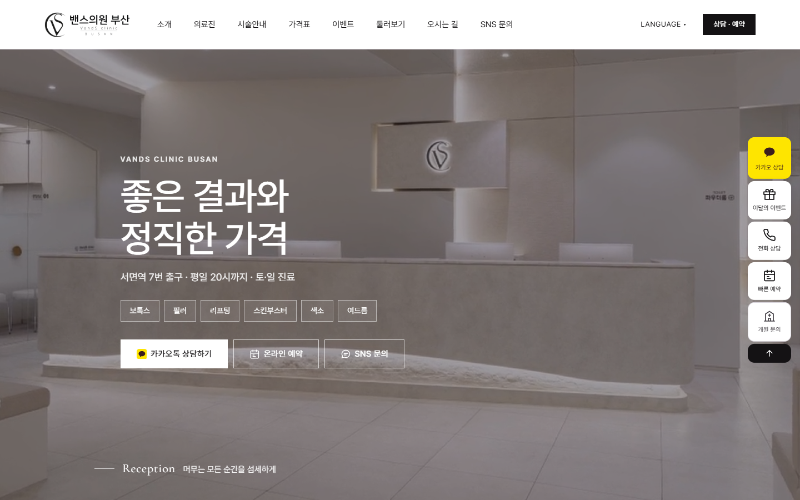

DR.GEO × COMINDWORKS
기존 홈페이지 진단 · 2026.11.03
기초 단계
54번 중 10번 언급
서로 다른 지표 · 더하거나 평균 내지 않습니다
이번 제공 범위

밴스의원 부산점
진단 → 시안 → 반영 → 납품
Dr.GEO×CoMindWorks
수치: 기존 홈페이지 진단 보고서 p.1 (2026.11.03) · 신규 시안 점수와 전후 비교하지 않음